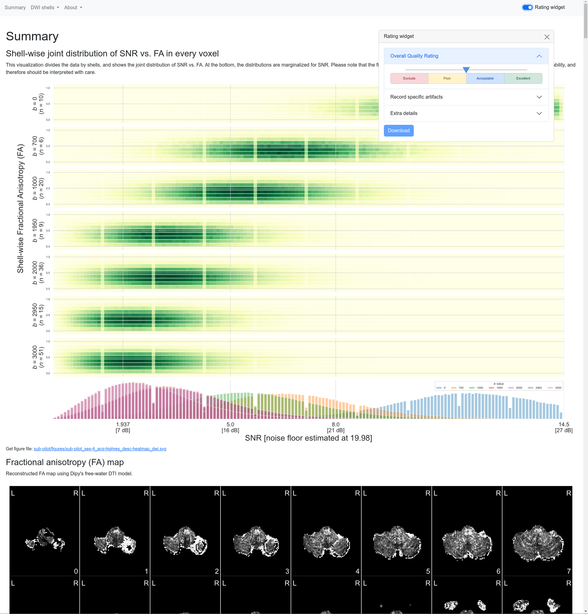

name: title layout: true class: cover --- count: false counter: false .section-mark.center[ <a href="https://www.nipreps.org/presentations/2025-MRITogether/index.html"> <object type="image/svg+xml" data="images/qr-talk-url.svg" style="width: 20%"></object> <br /> https://www.nipreps.org/presentations/2025-MRITogether/ </a> <br /> <br /> ## Analysis-Grade MRI at Scale: the NiPreps experience Oscar Esteban <<code>nipreps@gmail.com</code>> <br /> ### MRI Together — Online, Dec 11, 2025 ] ??? --- name: newsection layout: true .perma-sidebar[ <p class="rotate"> <a rel="license" href="http://creativecommons.org/licenses/by/4.0/"><img alt="Creative Commons License" style="border-width:0; height: 20px; padding-top: 6px;" src="https://i.creativecommons.org/l/by/4.0/88x31.png" /></a> <span style="padding-left: 10px; font-weight: 600;">MRI Together Workshop — NiPreps (Dec 11<sup>th</sup>, 2025)</span> </p> ] --- # About me .large[ **Data scientist** who plays with brain data & **open science** advocate. ] .right-column3.center[ <a href="https://www.nipreps.org/presentations/2025-MRITogether/index.html"> <object type="image/svg+xml" data="images/qr-talk-url.svg" style="width: 80%"></object> <br /> Link to slides </a> ] .pad-top.left-column3[ .people-table.larger[ | | | |---:|---| |  | **Oscar Esteban** <br /> Associate Professor & Head of [AxonLab](https://www.axonlab.org) <br /> School of Engineering <br /> HES-SO University of Applied Sciences and Arts Western Switzerland | ] * Research & Teaching FNS Fellow (2025) @ Lausanne University Hospital * PD (2020) @ Stanford University * Ph.D. (2015) @ Universidad Politécnica de Madrid <br />ESKAS (2012) @ EPFL ] --- counter: false .section-mark.center[ # Objectives ] ??? --- class: stepwise-svg <br /> <br /> .boxed-content.larger.no-bullet[ * .step-1.large[<i class="fa-solid fa-circle-right"></i> Contextualize **preprocessing** in the **data flow**] * .step-2.large[<i class="fa-solid fa-circle-right"></i> Understand the **compute graph** of preprocessing] * .step-3.large[<i class="fa-solid fa-circle-right"></i> Survey what's **available** and spot the **gaps**] * .step-4.large[<i class="fa-solid fa-circle-right"></i> Hands-on (**head-motion / eddy currents**)] * .step-5.large[<i class="fa-solid fa-circle-right"></i> Establish a **collaborative framework** & tooling] * .step-6.large[<i class="fa-solid fa-circle-right"></i> Strengthen **reproducibility** and **scaling**] ] --- counter: false .section-mark.center[ # Introduction ## Preprocessing & pipelines ] ??? --- # The research workflow of network analyses .boxed-content[ <object type="image/svg+xml" data="../assets/neuroimaging-workflow-large.svg" style="width: 100%; padding-top: 20pt;"></object> .center[ [Esteban et al., (2020)](http://doi.org/10.1038/s41596-020-0327-3); [Niso et al., (2022)](https://doi.org/10.1016/j.neuroimage.2022.119623) ] ] ??? In broad strokes, this is the MRI-based network analysis pipeline. Interestingly, it looks like any machine learning pipeline: we acquire data, perform quality control, preprocess it, define features, and then apply statistical modeling to extract insights. For a deeper dive into the details of the neuroimaging worflow, I've participated in several efforts such as the two references given below. --- count:false # The research workflow of network analyses .boxed-content[ <object type="image/svg+xml" data="../assets/neuroimaging-workflow-1.svg" style="width: 100%; padding-top: 20pt;"></object> .center[ [Esteban et al., (2017)](https://doi.org/10.1371/journal.pone.0184661); [Provins et al., (2023)](https://doi.org/10.3389/fnimg.2022.1073734); <br /> [Provins et al., (2025)](https://doi.org/10.1371/journal.pbio.3003149) [Hagen et al., (2025, *accepted*)](https://doi.org/10.1101/2024.10.21.619532) ] <br /> .no-bullet[ * .larger[<i class="fa-solid fa-clipboard-list"></i> Run the **MRI experiment** following Standard Operating Procedures (SOPs)] * <i class="fa-solid fa-folder-tree"></i> .larger[**Standardized data structure** (BIDS—Brain Imaging Data Structure)] * .larger[<i class="fa-solid fa-square-check"></i> **QA/QC** (Quality assurance / control)] ] ] ??? The pipeline starts with data acquisition, management and quality assurance and control (QA/QC). My early work on QA/QC applied machine learning to automatically assess MRI images of the brain, and raised awareness over issues like “site effects”—where data from different scanners or labs can systematically vary, much like “batch effects” in genomics. One key principle in AI is that models are only as good as their data and neuroimaging is no exception. This is why my group and I have been deeply involved in BIDS, produced version-controlled, machine-readable standard operating procedures, developed comprehensive QA/QC protocols and created ready-to-use applications to detect suboptimal data early. --- count:false # The research workflow of network analyses .boxed-content[ <object type="image/svg+xml" data="../assets/neuroimaging-workflow-2.svg" style="width: 100%; padding-top: 20pt;"></object> .center[ [Esteban et al., (2019)](https://doi.org/10.1038/s41592-018-0235-4); [Ciric et al., (2022)](https://doi.org/10.1038/s41592-022-01681-2); [Adebimpe et al., (2022)](https://doi.org/10.1038/s41592-022-01458-7) ] <br /> .no-bullet[ * .larger[<i class="fa-solid fa-smog"></i> Detection of **nuisance sources**] * .larger[<i class="fa-solid fa-magnifying-glass-location"></i> Spatiotemporal **location** of signals] * .larger[<i class="fa-solid fa-location-crosshairs"></i> Definition of **brain units** of analysis (regions)] ] ] ??? Next in the pipeline is preprocessing, which transforms raw data into something models can reliably interpret. For example, it identifies signals of no interest for their cleaning or accounting within modeling. In neuroimaging, preprocessing also deals with accurately locating signals and objects in space and time, and often the definition of relevant brain regions that focus the analysis. A decade ago, we might have called it “feature engineering.” Regardless of the term, it’s crucial: “preprocessing” is now a keyword in job posts at major players like Anthropic, DeepMind, and OpenAI. --- # The research workflow of network analyses .boxed-content[ <object type="image/svg+xml" data="../assets/neuroimaging-workflow-3.svg" style="width: 100%; padding-top: 20pt;"></object> .center[ [Thompson et al., (2021, *under review*)](https://doi.org/10.1101/2021.01.16.426941); [Rodrigue et al., (2021)](https://doi.org/10.1016/j.bpsc.2020.12.002); [Li et al., (2024)](https://doi.org/10.1038/s41562-024-01942-4) ] ] .pull-right[ <img src="../assets/matrix-fc.png" alt="matrix-fc" style="width: 20%" /> <br /> **Functional Connectivity (FC)** <br /> .gray-text[Synchronized BOLD co-variation between brain regions] ] .pull-left.align-right[ <img src="../assets/matrix-sc.png" alt="matrix-fc" style="width: 20%" /> <br /> **Structural Connectivity (SC)** <br /> .gray-text[Tracked water diffusion pathways between brain regions] ] ??? Once data are ready for analysis, we formalize connectivity as undirected acyclic graphs, represented with symmetric matrices. In the case of structural connectivity, we use diffusion MRI to track pathways of white-matter bundles connecting brain regions. For functional connectivity we measure synchronized functional MRI signal fluctuations sensitive to the dynamic oxygen content in blood. I’ve been involved in several works applying structural and functional connectivity. For instance, in Rodrigue 2021, we explored ML approaches to identify clinical biomarkers. Unfortunately, we had to conclude that, despite promising data quality and reliability remain insufficient for robust biomarker discovery. --- counter: false .section-mark.center[ # Preprocessing ## Let's learn from *fMRIPrep* ] ??? --- # fMRIPrep: despite minimal, a complex workflow .boxed-content.center[ <object type="image/svg+xml" data="../assets/fmriprep-natmeth-fig01-inkscape.svg" style="width: 75%;"></object> ] ??? Here I'm showing a very much simplified overview of fMRIPrep's design. Despite it being just "minimal" preprocessing and just one step of the pipeline, its complexity is evident. Rather than delving into each of these steps, I'll just say that there's a current need to update and improve computer vision algorithms and approaches (segmentation, image registration, dimensionality reduction, etc.) with AI/ML all across the dataflow. --- count:false class: stepwise-svg # fMRIPrep: despite minimal, a complex workflow .boxed-content.center[ <object type="image/svg+xml" data="../assets/fmriprep-natmeth-fig01-inkscape.svg" style="width: 75%;"></object> ] ??? --- # TemplateFlow: FAIR access to templates .boxed-content.center[ <img src="https://www.templateflow.org/assets/templateflow_fig-birdsview.png" style="width: 70%; padding-top: 10pt" /> ] ??? --- # NiPreps: NeuroImaging PREProcessing toolS .boxed-content[ <br /> .larger.center[ "*analysis-grade*" data <i class="fa-solid fa-circle-right"></i> data **directly consumable by analyses** ] .pull-left[ <br /> <br /> *Analysis-grade* data is an analogy to the concept of "*sushi-grade (or [sashimi-grade](https://en.wikipedia.org/wiki/Sashimi)) fish*" in that both are: .large[<i class="fa-solid fa-circle-right"></i> **minimally preprocessed**,] and .large[<i class="fa-solid fa-circle-right"></i> **safe to consume** directly.] ] .pull-right.center[ <img src="https://raw.githubusercontent.com/nipreps/identity/refs/heads/main/nipreps-general/nipreps-transparent.png" width="100%" /> <a href="https://www.nipreps.org"><object type="text/xml+svg" data="https://www.nipreps.org/identity/nipreps-general/qr-code.svg" style="width: 40%"></object><br /> www.nipreps.org</a> ] ] ??? In computational neuroscience I'm recognized by my standardization efforts. NiPreps is a framework for standardized preprocessing pipelines in neuroimaging. I often use the “sushi-grade” analogy just like sushi-grade fish is minimally processed but safe to consume, NiPreps yields “analysis-grade” data, with minimal processing interventions but ready for direct machine learning ingestion. --- # NiPreps: 113 members + a robot .boxed-content.center[ <img style="width: 90%" src="https://raw.githubusercontent.com/nipreps/identity/refs/heads/main/nipreps-general/nipreps-members.png" /> ] --- # fMRIPrep: generalizing further .boxed-content.center[ <object type="image/svg+xml" data="https://www.nipreps.org/identity/fmriprep/fmriprep-21.0.0-inkscape.svg" style="width: 95%; padding-top: 15pt"></object> ] ??? --- class: stepwise-svg # fMRIPrep: fit & transform .boxed-content.center[ <object type="image/svg+xml" data="../assets/fmriprep-fit-transform-inkscape.svg" style="width: 100%; padding-top: 20pt"></object> ] --- counter: false .section-mark.center[ # QA/QC ## Quick notes ] ??? --- # QA/QC of the neuroimaging worflow .boxed-content[ .center[ <object type="image/svg+xml" data="../assets/neuroimaging-workflow-large.svg" style="width: 90%; padding-bottom: 55.5pt; padding-top: 120pt;"></object> ] .align-right[ ([Provins et al., 2023](http://doi.org/10.3389/fnimg.2022.1073734)) ] ] ??? --- class: stepwise-svg # QA/QC of the neuroimaging worflow .boxed-content[ .center[ <object type="image/svg+xml" data="../assets/provins-qaqc-protocol.svg" style="width: 100%; padding-bottom: 5pt; padding-top: 40pt;"></object> ] .align-right[ ([Provins et al., 2023](http://doi.org/10.3389/fnimg.2022.1073734)) ] ] --- # QA/QC protocols: 'Swiss-cheese security model' .boxed-content[ .center[ <object type="image/svg+xml" data="../assets/provins-qaqc-protocol.svg" style="width: 60%; padding-bottom: 10pt; padding-top: 10pt;"></object> <object type="image/svg+xml" data="../assets/swiss-cheese.svg" style="width:60%"></object> .small[ [BenAveling @ wikipedia](https://en.wikipedia.org/wiki/Swiss_cheese_model#/media/File:Swiss_cheese_model_textless.svg) ] ] ] ??? For those with knowledge about security protocols, this approach will surely evoke the Swiss cheese model. The model assumes that all QC checkpoints will have holes through which data progresses toward analysis. By layering several QC checkpoints looking at the data in different ways, we make sure that images with potential to bias the results do not make all the way through the workflow. --- ## MRIQC: QA/QC of unprocessed data <br /> <br /> .boxed-content[ .center[ <img src="../assets/mriqc-paper.png" alt="workflow" style="width: 80%;" /> ] <br /> .align-right[ ([Esteban et al., 2017](http://doi.org/10.1371/journal.pone.0184661)) ] ] ??? We created MRIQC at Stanford back in 2016, to assess anatomical and functional images shared through OpenNeuro. --- ## MRIQC: QA/QC of unprocessed data .boxed-content.center[ <img src="../assets/01-mriqc-group.png" alt="workflow" style="width: 100%" /> ] ??? MRIQC provides support for visual and automated assessment. Visual assessment is supported with the individual reports, which I'll introduce later. Automated assessment can be built on a number of image quality metrics that we extract from every image. In this slide, you can see a "group" report generated by MRIQC, plotting several image quality metrics corresponding to the T1w images in a large dataset. --- count:false ## MRIQC: QA/QC of unprocessed data .boxed-content.center[ <img src="../assets/02-mriqc-group.png" alt="workflow" style="width: 100%" /> ] ??? Let's focus on the two first, which are the coefficient of joint variation of gray and white matter, and the contrast-to-noise ratio. --- count:false ## MRIQC: QA/QC of unprocessed data .boxed-content.center[ <img src="../assets/03-mriqc-group.png" alt="workflow" style="width: 70%" /> ] ??? If we zoom in, we can find some datapoints where these two particular metrics are outlying. We can click on the particular datapoint, and the individual report opens up in our screen. --- count:false ## MRIQC: QA/QC of unprocessed data .boxed-content.center[ <img src="../assets/04-mriqc-group.png" alt="workflow" style="width: 60%" /> ] ??? In this case, we can see how this particular T1 weighted image has obvious head motion patterns that probably makes it unusable for almost any application. --- ## Presenting MRIQC for DWI .boxed-content.center[ <p></p> ] ??? Over the last year, we have improved MRIQC to generate quality metrics and visualizations. The one you can see on the screen shows the shell-wise joint distribution of SNR (with reference to the noise floor calculated by means of PCA) in the x axis and FA in the y axes. --- # MRIQC: dMRI reports (HCPh) .boxed-content[ <iframe src="https://mriqc.s3.amazonaws.com/hcph/group_dwi.html" style="border: 0; width: 100%; height: 550px; margin-top: 10px"></iframe> ] ??? --- # MRIQC: dMRI reports (HBN) .boxed-content[ <iframe src="https://mriqc.s3.amazonaws.com/hbn100/group_dwi.html" style="border: 0; width: 100%; height: 550px; margin-top: 10px"></iframe> ] ??? --- ## Browse yourself: 100 Healthy Brain Network <br /> .boxed-content[ .pull-left.center[ ### Browseable reports <a href="https://mriqc.s3.amazonaws.com/hbn100/group_dwi.html"><img src="../assets/qr-results-hbn-s3.svg" alt="workflow" style="width: 90%" /></a> ] .pull-right.center[ ### Datalad / Git annex <a href="https://github.com/nipreps-data/derivatives-mriqc-hbn"><img src="../assets/qr-results-hbn-datalad.svg" alt="workflow" style="width: 90%" /></a> ] ] ??? --- # fMRIPrep: recap .boxed-content.center[ <object type="image/svg+xml" data="../assets/fmriprep-fit-transform-inkscape.svg" style="width: 100%; padding-top: 20pt"></object> ] --- # Our dMRI preprocessing pipeline .boxed-content.center[ <object type="image/svg+xml" data="images/from-fmriprep-to-dmriprep-inkscape.svg" style="width: 100%; padding-top: 20pt"></object> ] --- class: stepwise-svg .boxed-content.center[ <object type="image/svg+xml" data="../assets/nipreps-chart.svg" style="width: 80%; padding-top: 5pt"></object> ] --- # Code of Conduct & License (workshop repo) <br /> .boxed-content[ .pull-left[ .large[<i class="fa-solid fa-handshake-angle"></i> **Code of Conduct**] .no-bullet[ * .large[Be **respectful** & **inclusive**; critique ideas, not people.] * .large[Assume good intent.] * .large[Report issues to the organizers; we’ll redirect and move on.] ] <br /> .gray-text.large[[NiPreps' CoC](https://www.nipreps.org/community/CODE_OF_CONDUCT/) uses the Contributor Covenant v1.4] ] .pull-right[ .large[<i class="fa-solid fa-scale-balanced"></i> **License: Apache‑2.0**] .no-bullet[ * .large[**Permissive and recommends tracking changes** → ideal for scientifc code.] ] .gray-text.large[[NiPreps uses Apache 2.0](https://www.nipreps.org/community/licensing/)] ] ] --- # Analytical variability in dMRI .boxed-content.center[ <img src="https://www.nipreps.org/nipreps-book/_images/veraart-2019.png" style="width: 70%" alt="agreement across dMRI preprocessing steps" /> .gray-text[Veraart et al. [ISMRM 2019](https://www.ismrm.org/19/program_files/MIS15.htm)] ] ??? In his 2019 ISMRM talk [1], Dr. J. Veraart polled the developers of some of the major dMRI analysis software packages. The goal was to understand how much consensus there was in the field on whether to proceed with certain pre-processing steps. The poll showed that consensus is within reach. However, different pre-processing steps have varying levels of support. Head motion and eddy current correction, detecting outliers and denoising must be done. Susceptibility distortion correction and removing Gibbs-ringing are also good to do but depend on the acquisition parameters. Finally, for some steps such as correcting for B1 inhomogeneities or signal drift, their importance has not yet been demonstrated. --- # dMRIPrep workflow .boxed-content.center[ <img src="https://www.nipreps.org/nipreps-book/_images/figure1.svg" style="width: 50%" alt="proposed dMRIPrep workflow" /> ] ??? --- class: stepwise-svg # Introducing *NiFreeze* .boxed-content.center[ <object type="image/svg+xml" data="../assets/nifreeze-flowchart.svg" style="width: 90%; padding-top: 20pt"></object> ] --- counter: false .section-mark.center[ <a href="https://www.nipreps.org/nipreps-book"> <object type="image/svg+xml" data="images/qr-nipreps-book.svg" style="width: 20%"></object> </a> # <a href="https://www.nipreps.org/nipreps-book" style="text-decoration: none" target="_blank"><span style="font-size: 0.8em; color: #666">nipreps.org/</span><br />nipreps-book</a> ] ??? --- counter: false .section-mark.center[ ## Option 2: Docker # <i class="fa-brands fa-docker large"></i> .large[ .large[ ``` docker run -it --rm -p 8888:8888 \ -t nipreps/nipreps-book ``` ] ] ] --- counter: false .section-mark.center[ ## Option 3: Binder <a href="https://mybinder.org/v2/gh/nipreps/nipreps-book/main?urlpath=lab/tree/docs/notebook" target="_blank"> <object type="image/svg+xml" data="images/qr-nipreps-book-binder.svg" style="width: 20%"></object><br /> <img src="https://mybinder.org/badge_logo.svg" alt="https://mybinder.org/v2/gh/nipreps/nipreps-book/main?urlpath=lab/tree/docs/notebook" /> </a> .large[ .large[ .gray-text[https:// [shorturl.at/LZ7Wa](https://mybinder.org/v2/gh/nipreps/nipreps-book/main?urlpath=lab/tree/docs/notebook)] ] ] ] --- counter: false .section-mark.center.large[ # <a href="https://www.nipreps.org/assets/fmriprep-bootcamp-geneva2024/day1-02-bids/#3" target="_blank"> BIDS Unit from NiPreps course </a> ] ??? --- counter: false .section-mark.center[ # Thanks! ## Questions? ]